nirvighnam/reeds-open.png
KEEP ORIGINAL — size or alpha-quality gate favours the original
200.0 KB → 58.7 KB (1000×1000 → 654×654) · existing production 114.2 KB
SSIM 0.9834 · PSNR 39.78 dB · alpha-edge 5.40 · alpha 0.465 FLAGGED: Alpha-edge >5/255, KEEP ORIGINAL: alpha sprite below conservative quality gate
Original: src/zones/shloka-river/scenes/Scene3/assets/images/nirvighnam/reeds-open.pngCandidate: src/zones/shloka-river/scenes/Scene3/assets/images-opt/nirvighnam/reeds-open-opt.webp
Alpha retained · q85 · resized with margin · sampled max box 242×242 CSS px at 1366 stage (pose-container size inferred from CSS)
Real display size
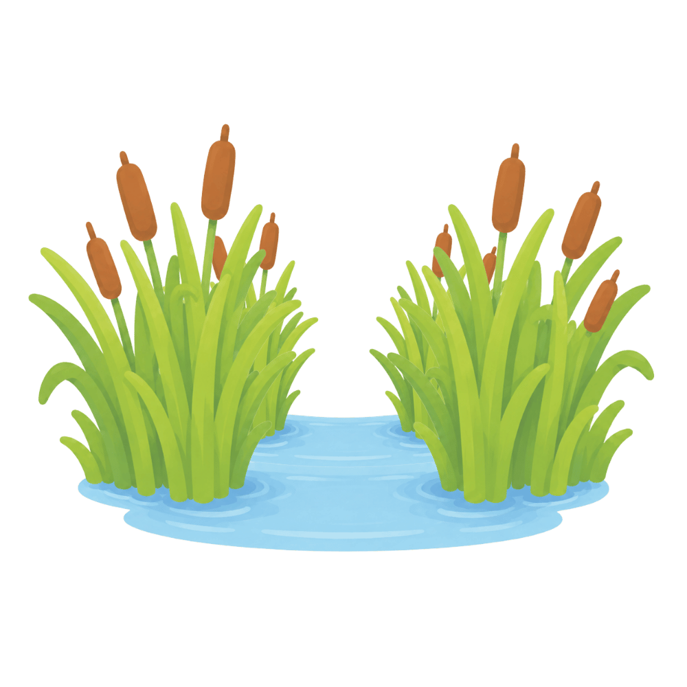
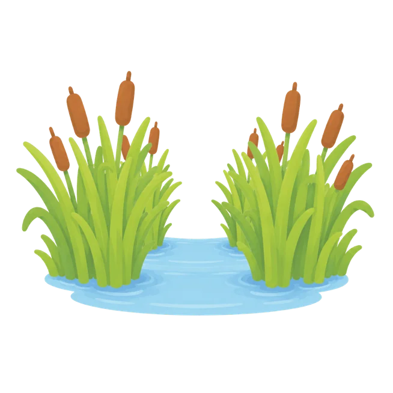
3× zoom — pan to inspect fine detail and alpha edges
nirvighnam/reeds-closed.png
KEEP ORIGINAL — size or alpha-quality gate favours the original
144.9 KB → 43.9 KB (1000×1000 → 654×654) · existing production 81.9 KB
SSIM 0.9890 · PSNR 40.98 dB · alpha-edge 5.72 · alpha 0.355 FLAGGED: Alpha-edge >5/255, KEEP ORIGINAL: alpha sprite below conservative quality gate
Original: src/zones/shloka-river/scenes/Scene3/assets/images/nirvighnam/reeds-closed.pngCandidate: src/zones/shloka-river/scenes/Scene3/assets/images-opt/nirvighnam/reeds-closed-opt.webp
Alpha retained · q85 · resized with margin · sampled max box 242×242 CSS px at 1366 stage
Real display size
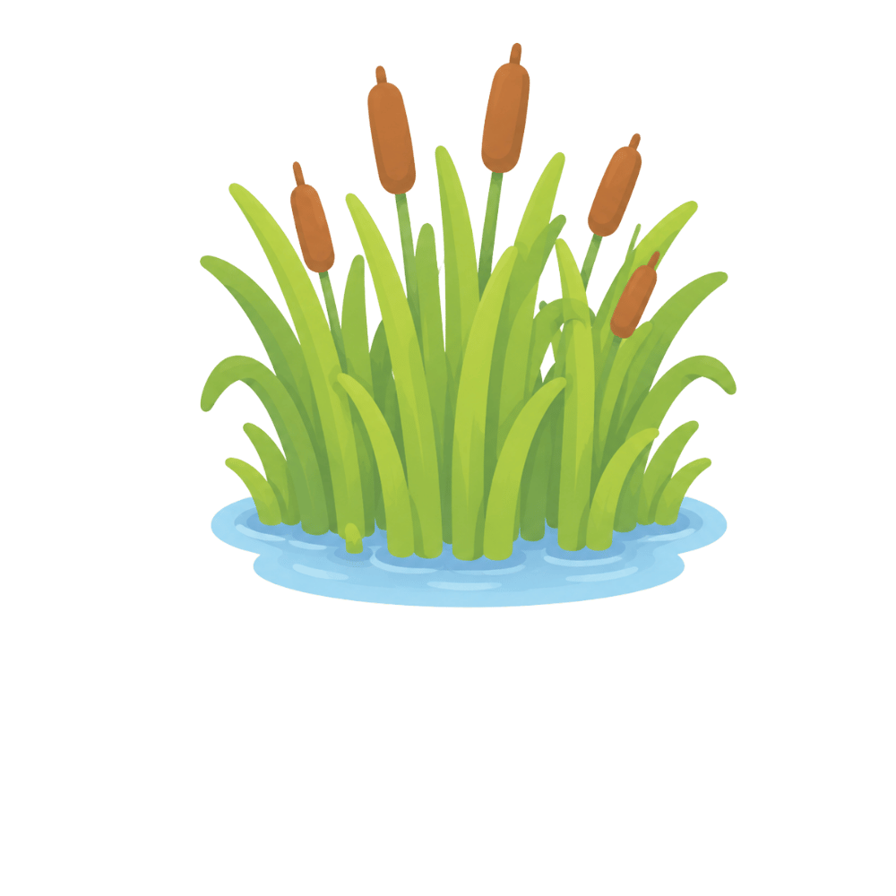
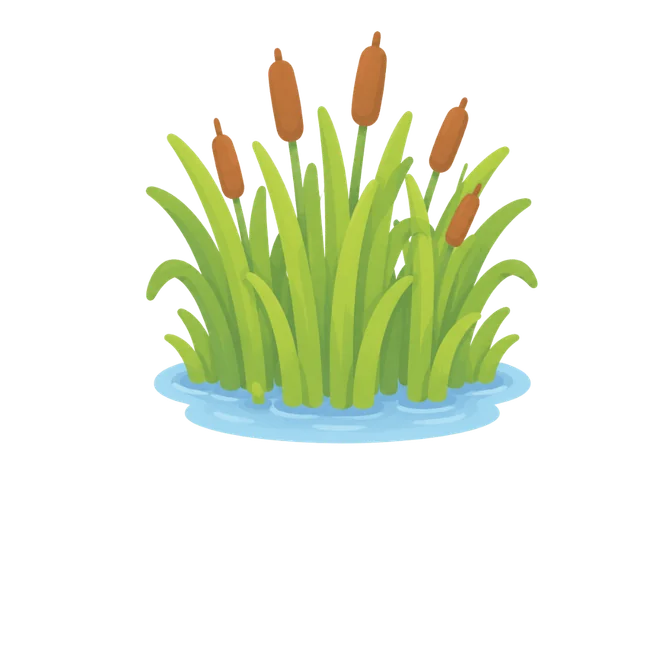
3× zoom — pan to inspect fine detail and alpha edges
nirvighnam/branch.png
KEEP ORIGINAL — size or alpha-quality gate favours the original
29.4 KB → 12.5 KB (400×400 → 400×400) · existing production 12.2 KB
SSIM 0.9921 · PSNR 43.44 dB · alpha-edge 5.87 · alpha 0.225 FLAGGED: Alpha-edge >5/255, KEEP ORIGINAL: production PNG is smaller, KEEP ORIGINAL: alpha sprite below conservative quality gate
Original: src/zones/shloka-river/scenes/Scene3/assets/images/nirvighnam/branch.pngCandidate: src/zones/shloka-river/scenes/Scene3/assets/images-opt/nirvighnam/branch-opt.webp
Alpha retained · q85 · source dimensions retained · sampled max box 168×168 CSS px at 1366 stage
Real display size
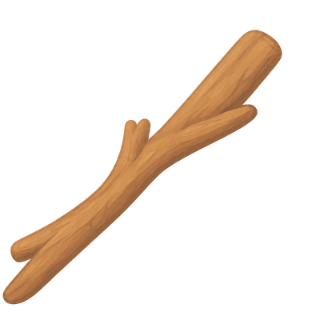
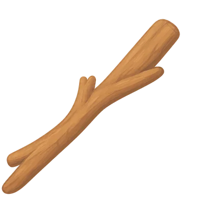
3× zoom — pan to inspect fine detail and alpha edges
nirvighnam/stone.png
KEEP ORIGINAL — size or alpha-quality gate favours the original
34.0 KB → 12.7 KB (400×400 → 400×400) · existing production 7.9 KB
SSIM 0.9948 · PSNR 44.95 dB · alpha-edge 2.47 · alpha 0.212 FLAGGED: KEEP ORIGINAL: production PNG is smaller
Original: src/zones/shloka-river/scenes/Scene3/assets/images/nirvighnam/stone.pngCandidate: src/zones/shloka-river/scenes/Scene3/assets/images-opt/nirvighnam/stone-opt.webp
Alpha retained · q85 · source dimensions retained · sampled max box 201×201 CSS px at 1366 stage
Real display size
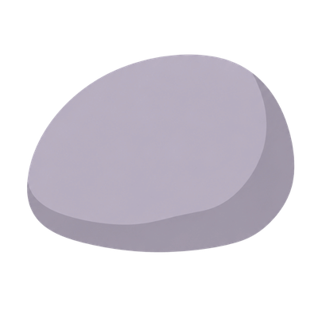
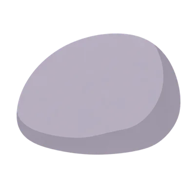
3× zoom — pan to inspect fine detail and alpha edges
saurakoti-bg.png
Proposed replacement — awaiting image approval
802.1 KB → 36.1 KB (2048×1536 → 2048×1536) · existing production 367.9 KB
SSIM 0.9819 · PSNR 44.15 dB · alpha-edge 0.00 · alpha 0.000 passes metric gate
Original: src/zones/shloka-river/scenes/Scene3/assets/images/saurakoti-bg.pngCandidate: src/zones/shloka-river/scenes/Scene3/assets/images-opt/saurakoti-bg-opt.webp
Opaque background · q85 · source dimensions retained · sampled max box 1366×1024 CSS px at 1366 stage
Real display size

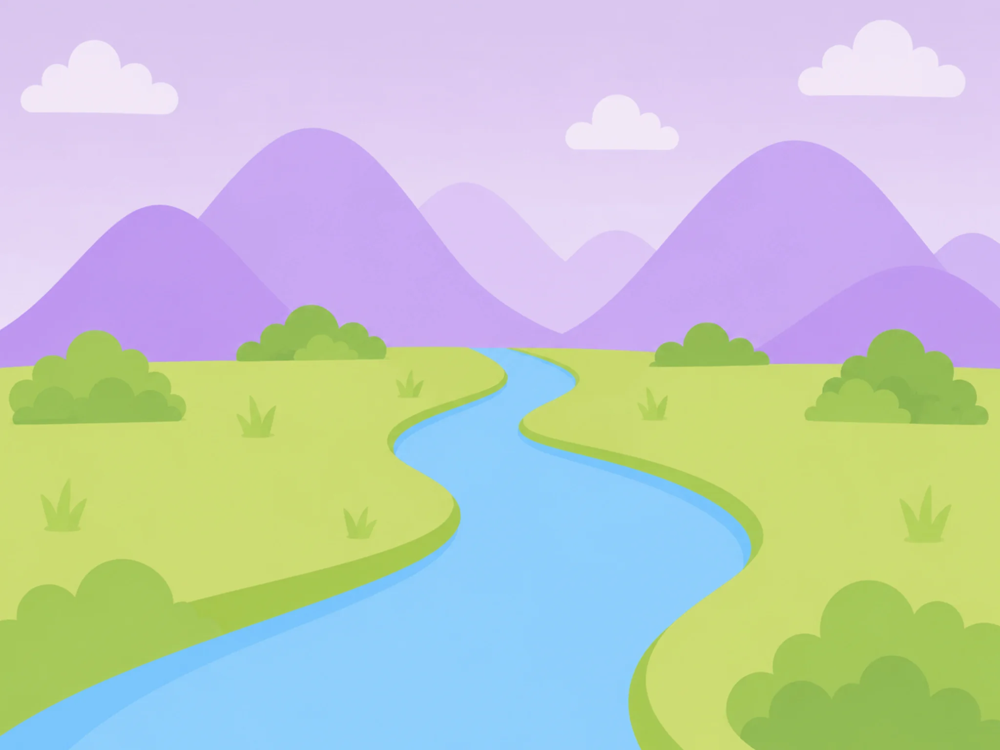
3× zoom — pan to inspect fine detail and alpha edges
nirvighnam/nest.png
Proposed replacement — awaiting image approval
37.2 KB → 12.3 KB (400×400 → 400×400) · existing production 16.5 KB
SSIM 0.9888 · PSNR 41.44 dB · alpha-edge 4.63 · alpha 0.184 passes metric gate
Original: src/zones/shloka-river/scenes/Scene3/assets/images/nirvighnam/nest.pngCandidate: src/zones/shloka-river/scenes/Scene3/assets/images-opt/nirvighnam/nest-opt.webp
Alpha retained · q85 · source dimensions retained · sampled max box 164×164 CSS px at 1366 stage
Real display size
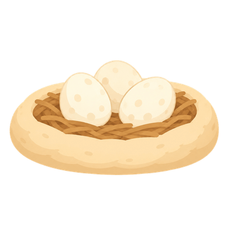
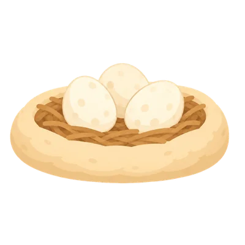
3× zoom — pan to inspect fine detail and alpha edges
nirvighnam/nir-turtle-happy.png
Proposed replacement — awaiting image approval
50.1 KB → 14.3 KB (400×400 → 338×338) · existing production 23.8 KB
SSIM 0.9888 · PSNR 40.49 dB · alpha-edge 4.41 · alpha 0.325 passes metric gate
Original: src/zones/shloka-river/scenes/Scene3/assets/images/nirvighnam/nir-turtle-happy.pngCandidate: src/zones/shloka-river/scenes/Scene3/assets/images-opt/nirvighnam/nir-turtle-happy-opt.webp
Alpha retained · q85 · resized with margin · sampled max box 125×125 CSS px at 1366 stage (pose-container size inferred from CSS)
Real display size
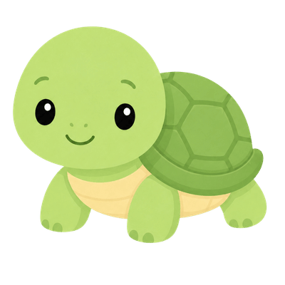
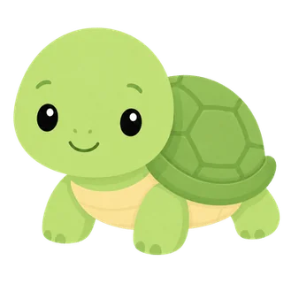
3× zoom — pan to inspect fine detail and alpha edges
nirvighnam/nir-turtle-sad.png
Proposed replacement — awaiting image approval
46.5 KB → 13.7 KB (400×400 → 338×338) · existing production 21.0 KB
SSIM 0.9889 · PSNR 40.74 dB · alpha-edge 4.66 · alpha 0.324 passes metric gate
Original: src/zones/shloka-river/scenes/Scene3/assets/images/nirvighnam/nir-turtle-sad.pngCandidate: src/zones/shloka-river/scenes/Scene3/assets/images-opt/nirvighnam/nir-turtle-sad-opt.webp
Alpha retained · q85 · resized with margin · sampled max box 125×125 CSS px at 1366 stage
Real display size
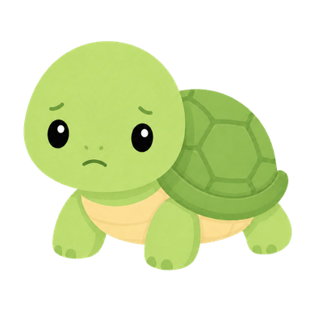
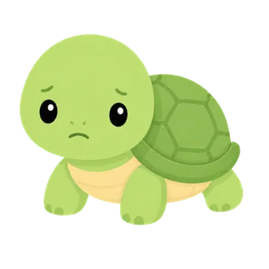